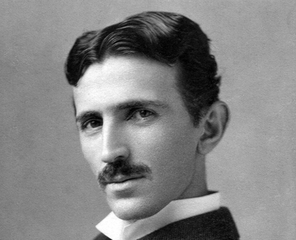

Los stands detras del proyecto
Como DIO necesitaba a The World, Za Warudo necesitaba estos dos.
Yeray Trejo Sanchez
El que hizo el SQL en 10 minutos y luego se fue a jugar.
Especialista en bases de datos relacionales, FK que se referencian a si mismas y en decir "eso ya lo hice yo" cuando nadie lo ha visto. Su stand: King Crimson, borra las partes del codigo que no le gustan y actua como si nunca hubieran existido.
Ciclo: DAM — CPIFP Alan Turing, Malaga
Ver GitHub
Nelson Filipe Fardilha Karlsson
El absoluto genio que le daba clases particulares a sus profesores, como por ejemplo al profesor de base de datos y el de lenguaje de marcas.
Experto en hacer fetch() a endpoints que todavia no existen, en acostumbrado a que el profe le diga "muy bien" y en ser tan bueno que sus propios compañeros lo confunden por el profesore por su increible intelecto. Su stand: The World, para el tiempo cada vez que hay un bug.
Ciclo: DAM — CPIFP Alan Turing, Malaga
Ver GitHubEl proyecto
Za Warudo nacio de una pregunta inocente: "oye, y si hacemos un Hundir la Flota pero con videojuegos". Lo que no sabiamos era que nuestro propio profesor no dijera en palabras textuales "es una mierda", aun asi, no nos rendimos y conseguimos crear esta obra maestra.
El nombre viene del stand The World de JoJo's Bizarre Adventure, que para el tiempo (si te preguntas porque pusimos ese nombre, es basicamente porque nos vimos todo jojos justo antes de empezar el proyecto en menos de un mes). Nosotros tambien lo paramos, pero involuntariamente, cada vez que el servidor petaba.
Tecnicamente, es HTML5 + CSS3 + JavaScript , Node.JS con Express en el backend, y MySQL con tres tablas que al principio eran ocho. La simplificacion fue el unico SELECT que salio bien a la primera.